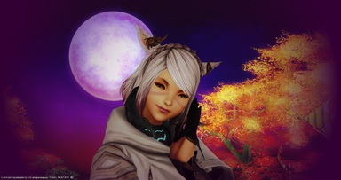
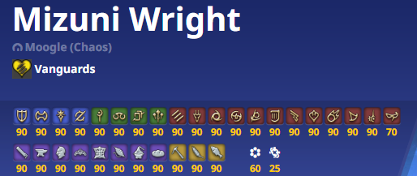
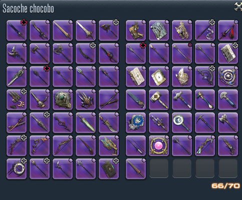

Présentation de mon personnage

J'ai créée Mizuni Wright sur Moogle, au début de Stormblood, il y a plusieurs années maintenant !
Il s'agit de mon deuxième personnage car j'avais perdu les identifiants du premier que j'ai créé avant la sortie de Heavensward...
Je suis une magnifique Miqo'te de la tribu du soleil, mariée à un Miqo'te ascendant PNJ (coucou Thunder'god Cid).
Je joue très souvent à mon jeu préféré, plusieurs dizaines d'heures par semaine à vrai dire !
Je fais du contenu casu et du savage, mais sans roster, car mes horaires de jeu ne me le permettent pas tout le temps :(
Depuis quelques mois, j'ai décidé de farmer les hauts-faits et je suis passée de top 100 à bientôt top 30 sur Moogle !
Pas mal pour une joueuse "casu" comme moi nan ?
Mes jobs préférés

J'ai commencé par deux fois (trois fois même avec mon alt) en tant qu'arcaniste (yikes Limsa pour les gens dépourvus de sens de l'orientation comme moi...)
j'étais donc main érudit. J'ai joué également l'astromancien en plus de l'érudit quand je commençais à raid en savage jusque Halicarnasse.
Quand j'ai repris deux années après, j'ai un peu délaissé l'érudit pour jouer le mage rouge, que j'ai main dps pendant un moment par la suite. J'étais chez moi
dans Eurêka, parmi les miens. J'ai un peu repris le heal vers Shadowbringers... mais pour enfin jouer le mage blanc. Je vous conseille d'ailleurs de
vous trouver un partenaire avec qui co-heal en savage, c'est vraiment génial de taper sans se soucier du lendemain, quand ton co-heal gère le healing sans toi =)
Et le tanking dans tout ça ? Et bien tanker m'a toujours fait peur, dans tous les MMORPGs que j'ai fait dans ma vie. Sauf que là on parle de FFXIV, et qui dit
FFXIV dit un personnage pour TOUS les jobs. Donc j'ai dû exp mes tanks, histoire de pas faire tâche dans mes jobs montés. Sauf qu'à part ça, je ne les jouais pas car
j'avais peur de mal faire. MAIS depuis la fin de Shadowbringers, on va dire que je main tank, heal et dps, ça permet de pas trop faire toujours la même chose.
Mon main tank est évidemment le war, j'adore le war, c'est simple et efficace à jouer ! En heal je joue presque exclusivement le mage blanc car je trouce qu'il reste
le heal le plus efficace que ce soit en heal ou en dps. Et en dps, je joue principalement des distances, je joue pas mal la danceuse, le mage rouge et depuis très peu,
l'invocateur que je n'avais jamais joué car j'ai toujours jouer l'érudit pour lvl up l'arcaniste. L'invocateur est sympa et on va dire que c'est le dernier job que j'ai
découvert dans FFXIV étant donné la grosse refonte.
Farmeuse de reliques en chef !

Je dois confesser quelque chose... j'ai passé beaucoup trop de temps sur FFXIV. Il se pourrait qu'au début je voulais juste quelques skins
stylés sur mes armes, une aura qui brille c'est toujours sympa quoi. Mais ça c'était que le début, j'ai ensuite rencontré quelqu'un qui voulait passer
beaucoup trop de temps sur le jeu comme moi, et ça a dégénéré...
Au début, on faisait un peu de reliques Heavensward car elles sont faciles et rapides à faire. Puis ensuite, on a fait les ARR, qui sont horriblement
longues évidemment, les pires selon moi, mais les plus jolies (et en plus leurs noms sont vraiment cools). Ma petite Ragnarok vous salue.
J'ai passé beaucoup trop de temps dans Eurêka également, tellement que j'ai fini par avoir toutes les reliques de là-bas. Je pense que j'ai dû commencer
et finir plusieurs séries en attendant que les aléas pop (désolée j'étais afk mais sympa, promis).
Qui dit nouvelles extensions, dit nouveaux jobs, et qui dit nouveaux jobs, dit nouvelles reliques. J'ai donc les 17 reliques de Shadowbringers (of course)
celles-ci étaient selon moi (et mon ami aussi fou que moi) assez faciles et rapides à avoir, à peine quelques mois pour tout avoir ! Par contre niveau skin, ce sont
clairement les plus moches ! On a également fait les reliques des jobs de crafteurs, sinon c'est pas drôle, quoi de plus sympa que d'avoir une poêle qui brille de mille feux ?
En tout cas, mon chocobo Phoenix me remercie pour sa sacoche remplie de reliques ! ( comment je vais faire pour les prochaines ???)